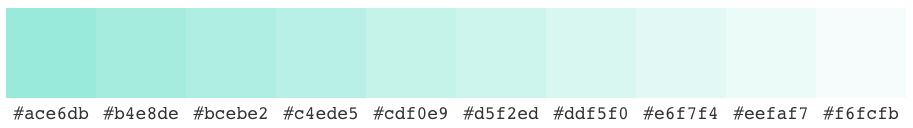
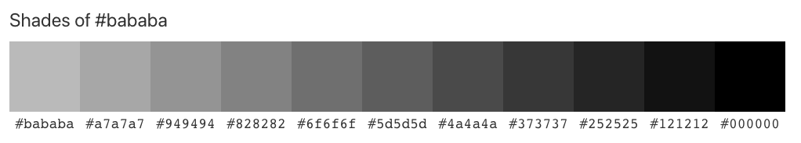

Inspired by my last portfolio website in CCT260, I hope to continue to showcase my strengths in digital marketing, media, business communications and design in life. In my current site, I designed three inner pages About, Design and Contact on top of my Homepage.
For my site's theme colour and the main navigation bar, I have chosen the mint colour #ddf5f0 which is my favourite colour and that goes well with my grey tabs and customized icon of the site. I have taken reference from color-hex.com which I find it a really useful site for my colour selections throughout the process.
For the dropdown menu and dropdown item, I have chosen to use $gray-900 and $gray-200 respectively (as referenced form the getbootstrap.com.)
For my Works page under Design section, I have decided to use #bababa colour that matches better with my hero section and embedded video.
For the body part, I have used Dancing Script as the major font for text and paragraphs. And for the headings and subheadings, I used a simlar font to Dancing Script that is Marck Script. I think these fonts give a more artistic look and add some flavours to the aesthetics of my entire site.
To create consistency in most of the pages, I have used a photo that is taken by myself while I'm travelling for the hero section. The place featured is the Grouse Mountain in Vancouver during the sunset time. It shows that I love nature and I love how it connects with people spiritually.
However, for the hero section on the Process page, I have created a collage using some of my recent photos. It tells viewers how I love coffee, desserts and hike. For the About page, I specially used my portrait as a little icon for both the hero section and by the end section of the page
As you can tell, to better present my content-heavy and photo-rich typologies throughout the site, I have employed both Principles of Disclosure and Exemplars. For instance, I displayed a couple of travel photos in Prague, Salzburg and Hong Kong in the Homepage. I also included an avatar of myself using the Avatarify App to assemble my outlook in the Works page. On the same page, I give viewers a glimpse of my previous design works and they also act as examples and references to my future employers. The Principles not only enriched my content, but also gave more meanings to the audience. It also avoided the issue of information overload within the site.
Apart from graphics, I also embedded some videos that add more motion to my content. For instance, I added a sunflowers' video and made a bit of masking effect for the hero section for the Biography page.
And on this Process page, I have added some images of color palettes that alleviate the level of content heaviness.
I believe Bootstrap definitely makes a beautiful addition to CSS,and it adds diversity to the site content.
I created a common Jumbotron element on each page for the heading to tell my audience what the section is all about.
On the Homepage, I have used cards to illustrate my past travel experience to viewers. For the About page, I used Bootstrap badges to highlight my skills in project management and digital marketing for the hero section.
On the same page, I have included quite a number of Bootstrap elements, such as the icon grid for my Key Skills section, the progess bar for the Level of Skills section, and the table feature for my languages' showcase.
Besides, I have also included the "Naming a source" feature for expressing my favourite quotes from Disney.
On the Contact page, I especially created a form for visitors to fill in and connect with me. The other tab is the credits part where I acknowledged the different sources and people whom I reached out to throughout the project.
In gerneral, I enjoyed these Bootstrap compoennts very much, as they provide different ways to present the different sections within my site!
For the Works page,I have included several visual components like Carousel and Modal to showcase my design works, as well as an embedded flower video in the Jumbotron section.